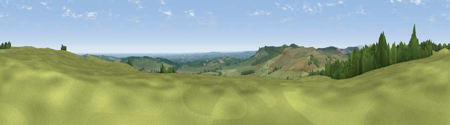

Viewpoint near Swarland
#4853 in England · top 18% of its area beats it · near SwarlandWhere it is
The exact computed spot (NU 12675 05725). Click the marker for map links.
The view, rendered

A 360° render of this exact spot computed from the terrain model, tree cover and land cover — summer colours, afternoon light, calibrated against photographs of famous viewpoints. Real trees, hedges and buildings will differ in detail.
The panorama
Grey silhouette: terrain skyline in each direction (720 bearings, Earth curvature and refraction included). Dashed green: skyline with trees (+15 m) and buildings (+8 m) as obstacles. Blue strip: how far the ground is visible on each bearing.
Where the view opens
Wedge length = distance to the farthest visible ground on that bearing (vegetation-aware). Rings at 10, 25 and 50 km.
What fills the view
74% grassland · 18% woodland · 4% cropland · 3% water
Angular shares of the visible panorama (visual magnitude), not map area. Landscape diversity 0.34 (0–1 Shannon).
Key numbers
More beautiful places nearby
The staircase of upgrades: each row has a higher view potential than everything closer. Driving times are estimates from straight-line distance, calibrated against real road routing — check an actual route before setting out.
| Place | Direction | Drive | Score |
|---|---|---|---|
| Viewpoint near Newton on the Moor | NNE · 1 km | ~2 min | 74.0 |
| Viewpoint near Longframlington | SSW · 3 km | ~8 min | 79.5 |
| Viewpoint near Whittingham | W · 7 km | ~14 min | 80.5 |
| Viewpoint near Rothbury | SW · 11 km | ~21 min | 81.1 |
| Viewpoint near Glanton | NNW · 11 km | ~21 min | 82.9 |
| Viewpoint near Eglingham | NNW · 17 km | ~29 min | 83.8 |
| Viewpoint near Chillingham | NNW · 20 km | ~34 min | 88.1 |
| Viewpoint near Easington | SE · 105 km | ~130 min | 90.2 |
55.34540, -1.80169 · source: screening · position refined by local search. Computed location — check access rights before visiting.